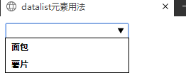
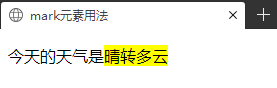
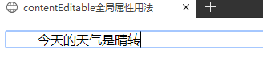

1) header 定义了文档的头部区域
<header>
<h1>网站标题<h1>
</header>
2) nav 定义导航链接的部分
<nav>
<ul>
<li>首页</li>
<li>关于我们</li>
<li>联系我们</li>
</ul>
</nav>
3) section 定义文档中的节（section，区段）
当一个元素只是为了样式化或者方便脚本使用时，使用div元素；当元素内容明确出现在文档大纲中，使用section元素
4) article定义页面独立的内容区域
一个特殊的section元素，代表一个独立完整的相关内容块
5) aside 定义页面的侧边栏内容
一般有两种使用方式：
1.包含在article元素中作为主要内容的附属信息，其中的内容可以是与当前文章有关的相关资料、名词解释等
<article>
<h1>....</h1>
<p>...</p>
<aside>...</aside>
</article>
2.在article元素外使用，作为页面或站点全局的附属信息。例如侧边栏
6) footer 定义section或document的页脚
一般用于页面或区域的底部，通常包含文档的作者、版权信息、使用条款等等。
1) video 定义视频
2) audio 定义音频
3) canvas 定义图形
4) datalist 定义可选数据的列表
用于为文本框提供一个可选数据的列表。如果把datalist提供的列表绑定到某文本框，需要使用文本框的list属性来引用datalist元素的id属性
datalist元素由一个或多个option元素组成，每一个option元素必须设置value属性
<html lang="en" xmlns="http://www.w3.org/1999/xhtml">
<head>
<meta charset="utf-8" />
<title>datalist元素用法</title>
</head>
<body>
<input type="text" list="food" />
<datalist id="food">
<option value="面包">面包</option>
<option value="薯片">薯片</option>
</datalist>
</body>
</html>

5) time 定义日期或时间
使用或不使用在视觉效果上没区别，使用后更容易被搜索引擎搜索到
6) mark 在视觉上向用户呈现那些需要突出的文字
当把一行文字包含在mark元素内，页面显示时文字会有背景
<html lang="en" xmlns="http://www.w3.org/1999/xhtml">
<head>
<meta charset="utf-8" />
<title>mark元素用法</title>
</head>
<body>
<p>今天的天气是<mark>晴转多云</mark></p>
</body>
</html>

7) progress 运行中的进度（进程）
页面上显示为一个进度条。value属性表示当前已完成的进度，max属性表示总进度
1) contentEditable 是否允许用户在线编辑元素中的内容
属性可以设置为true或false。设置为true：页面元素允许被编辑；设置为false：页面元素不允许被编辑；未设置属性，则该元素的编辑状态由父元素决定。
编辑完元素内容后，如果想保存编辑的内容，只能把元素的innerHTML属性发送到服务器端进行保存。
<html lang="en" xmlns="http://www.w3.org/1999/xhtml">
<head>
<meta charset="utf-8" />
<title>contentEditable全局属性用法</title>
</head>
<body>
<ul contenteditable="true">
今天的天气是晴转多云
</ul>
</body>
</html>

2) designMode 整个页面是否可编辑
通常整个页面是不能被编辑的。designMode属性只能在JavaScript脚本中修改，属性值有：on和off。
3) hidden 是否对元素进行隐藏
HTML5中所有元素都可以使用hidden属性。属性为bool类型，设为false元素可见；true元素不可见
4) spellcheck 是否必须对元素进行拼写或语法检查
spellcheck属性针对单行文本框和多行文本框设置的。属性为bool类型，设为true进行语法检查；false不进行语法检查。
但如果元素的readOnly属性和disabled属性生效的话，spellcheck属性将失效。
5) tabindex 规定元素的Tab键移动顺序
就是当在网页中不断的按下Tab键时，焦点所对应的控件。每一个控件的tabindex属性表示该控件是第几个被访问到的。